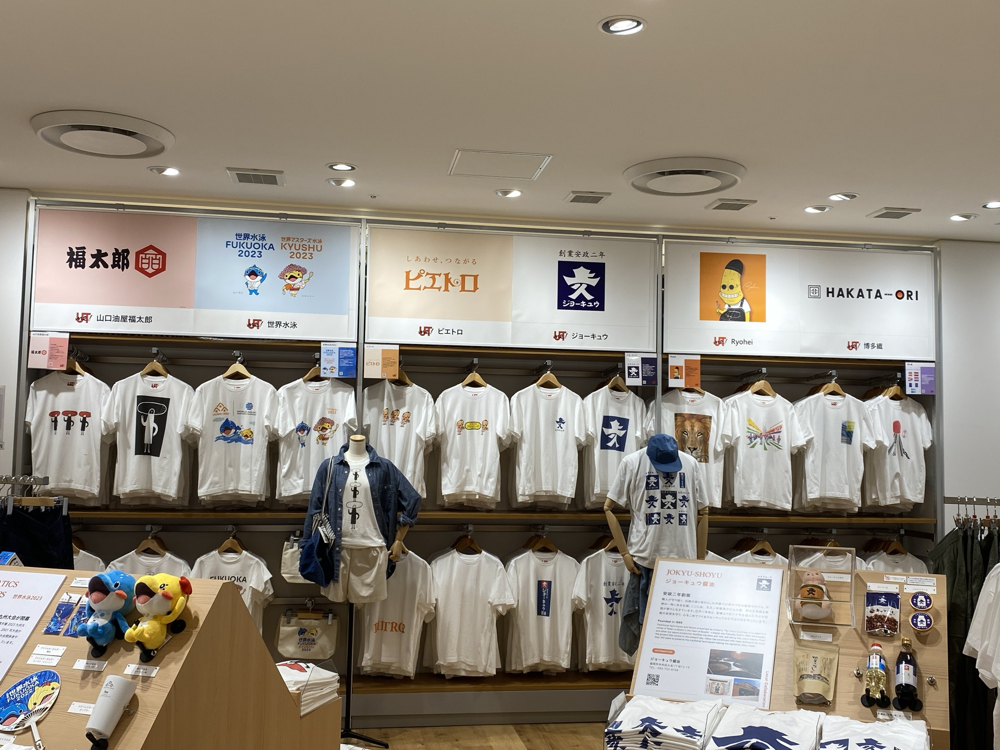
Creative Work
価値を、
届くかたちへ。
人の魅力から、ブランド、商品、Web、体験へ。表現する対象が変わっても、伝えるべき価値を見つけ、形にする仕事を続けてきました。
Accumulated Skills
「何でもできる」
のではなく、
目的に必要な形を選ぶ。
ロゴ、アパレル、Web、LP、AI講座は、別々の肩書を増やすためのものではありません。人や活動の価値を、相手に届く接点へ翻訳するために使ってきた手段です。
Collaboration
UNIQLO
× 博多織
コラボ限定Tシャツをデザイン。ミーナ天神店にて販売されました。
写真内には第三者ブランド・他商品が含まれます。担当範囲と二次利用条件は一般公開前に確認します。
Graphic / Apparel
手で、目で、
伝わる形に。
ロゴ、グラフィック、Tシャツ。目的に合わせて、表現を変える。
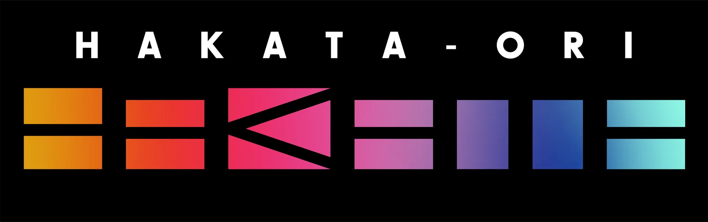
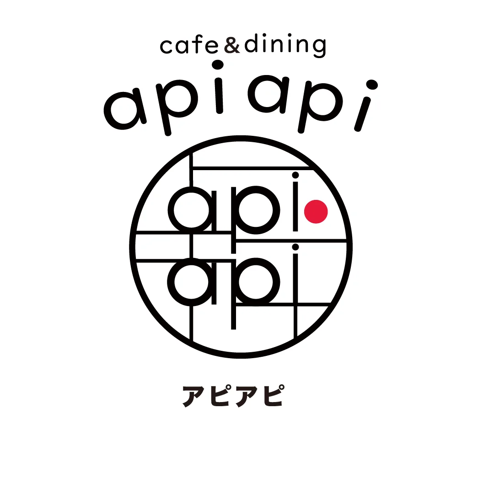
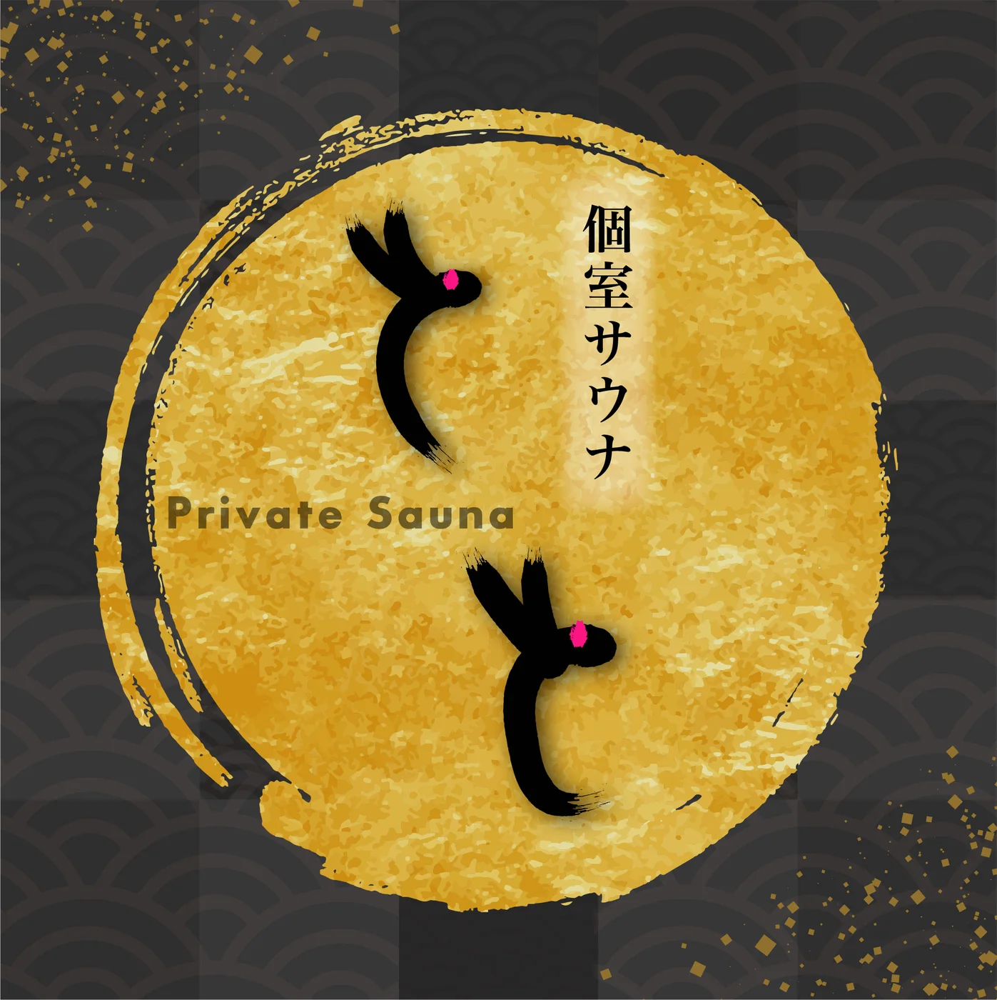
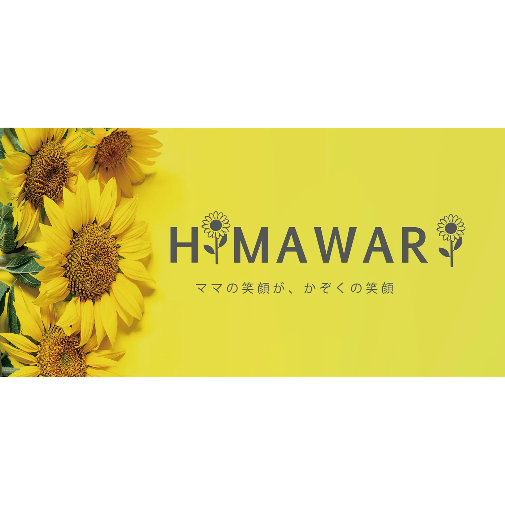
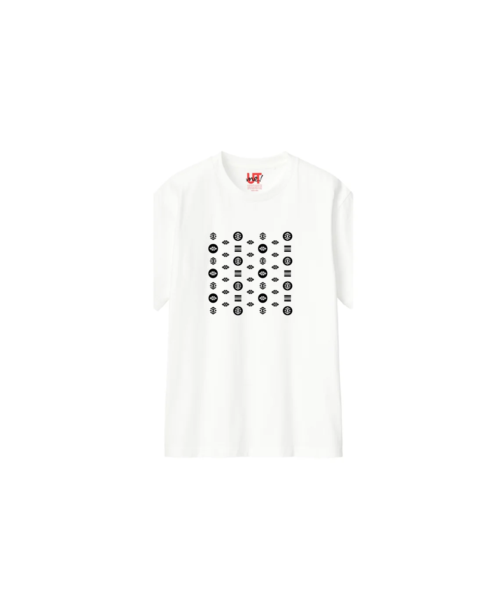
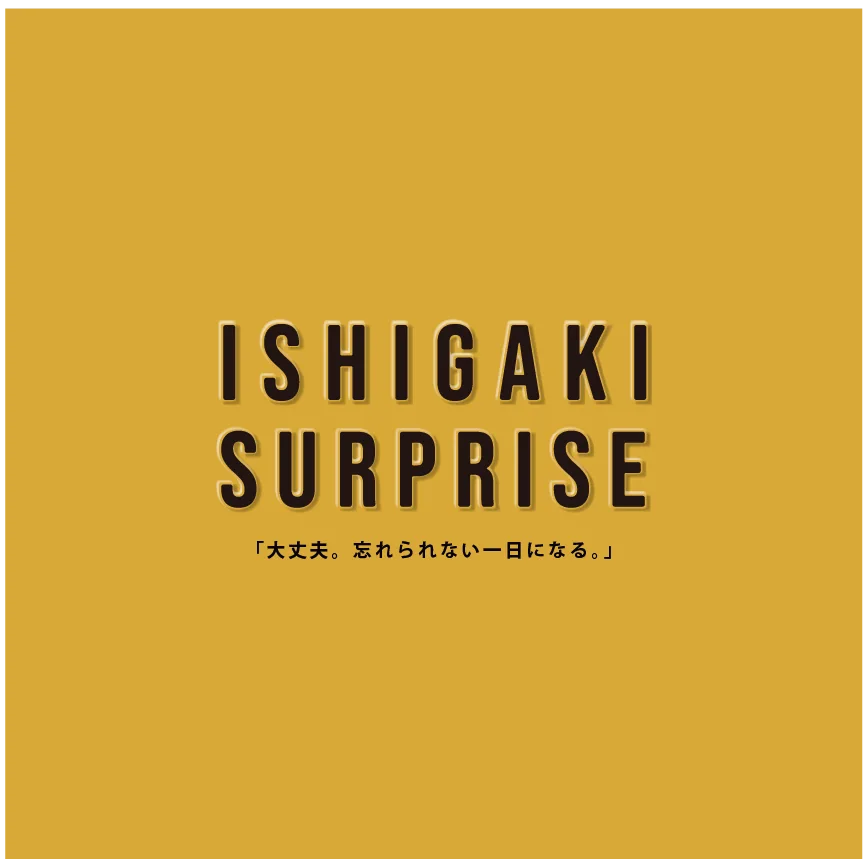
Web / LP
画面にも、
その人らしさを。
6つの制作例を、実際のページ画面から紹介します。
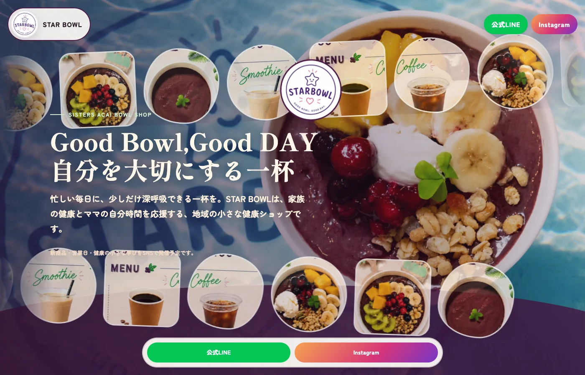
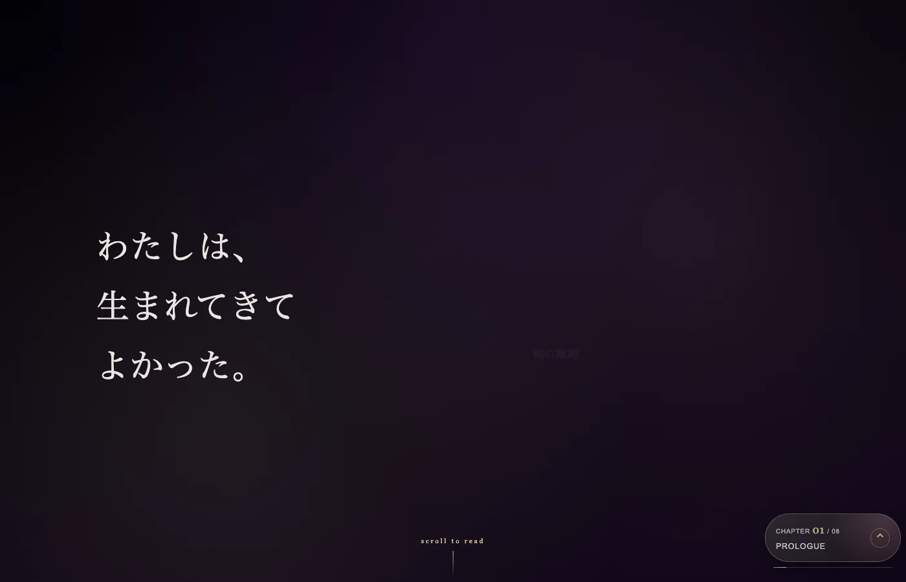
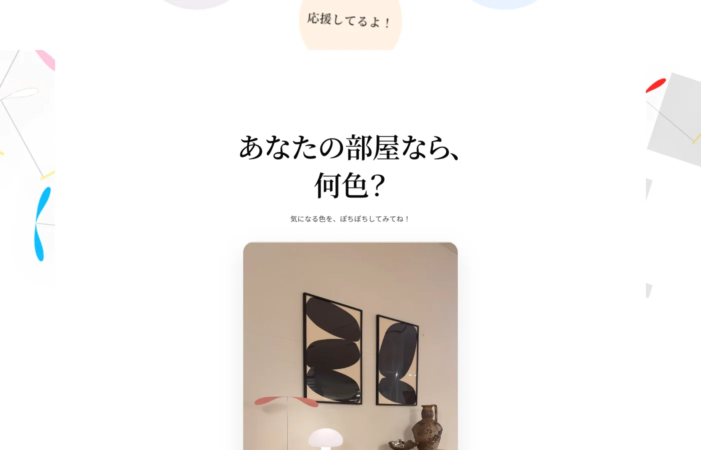
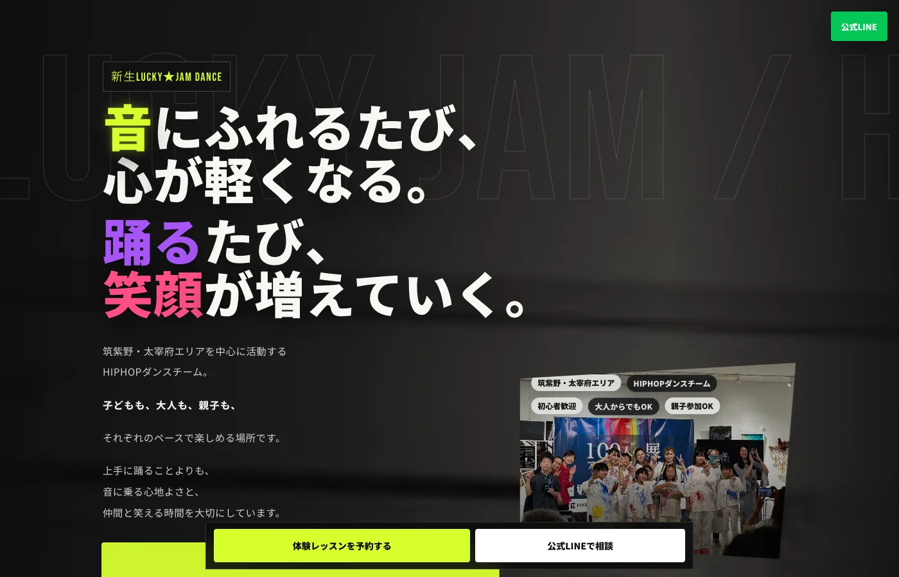
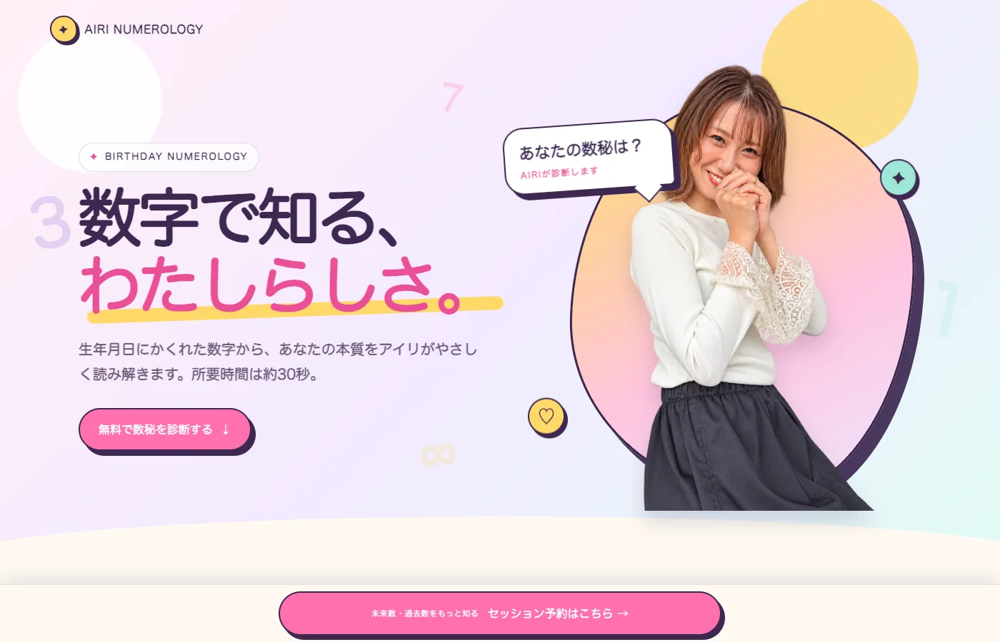
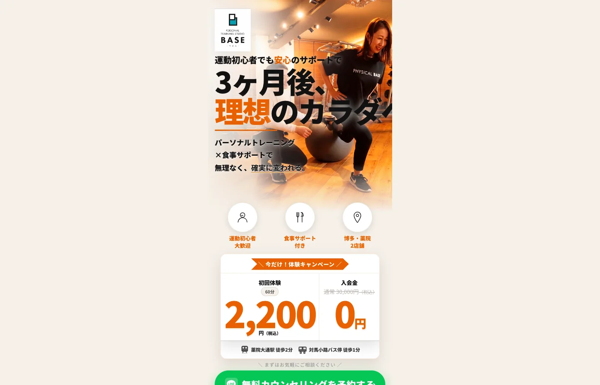
AI Lecture
AIを使う。
人間の時間をつくる。
AI講座も開催しています。仕事の効率化を、リアルな体験を楽しむ時間につなげます。
制作例に含まれる第三者の写真・ロゴ・文章は、掲載範囲と二次利用条件を確認してから一般公開します。
Current Direction
すべての経験を、
場づくりへ。
現在、最も注力する分野はイベント企画・プロデュース。クリエイティブは、その場の目的を伝え、人を招き、体験を形にするための力として使います。